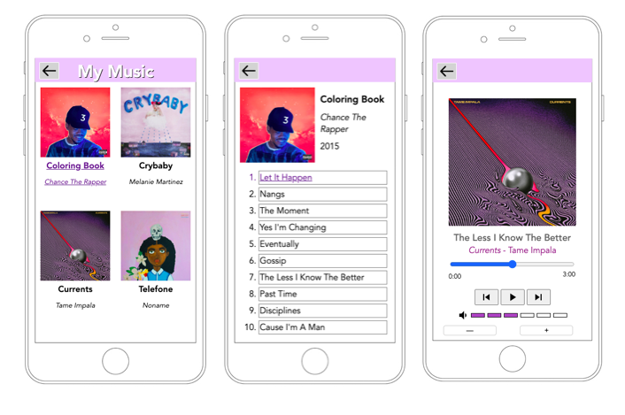

Music Player Project
The music player project is a programming project created at Northwestern University while enrolled
in CS 330 - HCI.
This project is the result of about 15 hours of work bridging concepts learned
throughout the first 7 weeks of the course. The front end is fully functional, created using
HTML, CSS and JS, and is designed to fit a standard iphone screen-sized interface
This project is tentatively not connected to a database so all song information is hardcoded and there
is no song (noise) database, but later iterations of this project may include a fully functioning,
dynamic interface that is connected to a growing database of songs.
The project includes an landing page which shows a set of albums to choose from (where only one is clickable).
This click takes you to a page with the songs that make up the album and information on the album
including the artists name and year of release.
Once a user selects a song, you move to a interface that resembles a music player, where you
can see the progress of the song, increase the volume and toggle the song being played.
All these pages have back buttons and accessibility components.
Visual:
